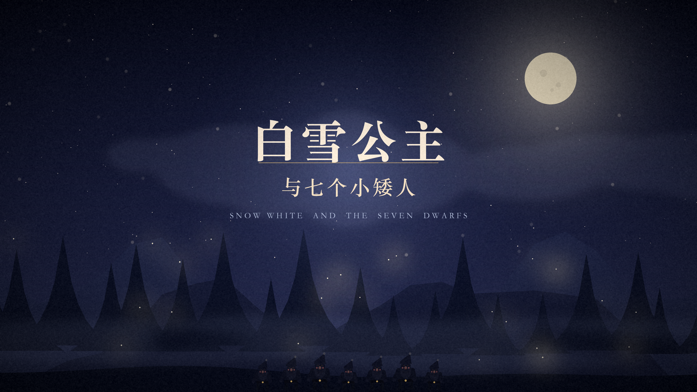
白雪公主与七个小矮人
（无旁白，仅音乐）
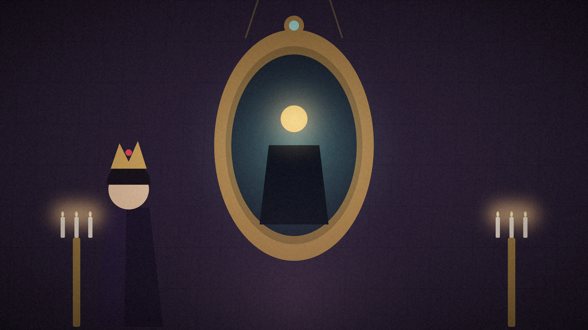
魔镜魔镜，谁是世界上最美的人？
城堡里住着一位皮肤像雪一样白的公主。她的继母是爱美的王后，每天都要问那面会说话的魔镜：魔镜魔镜，谁是世界上最美丽的人？魔镜说：白雪公主，比您更美。
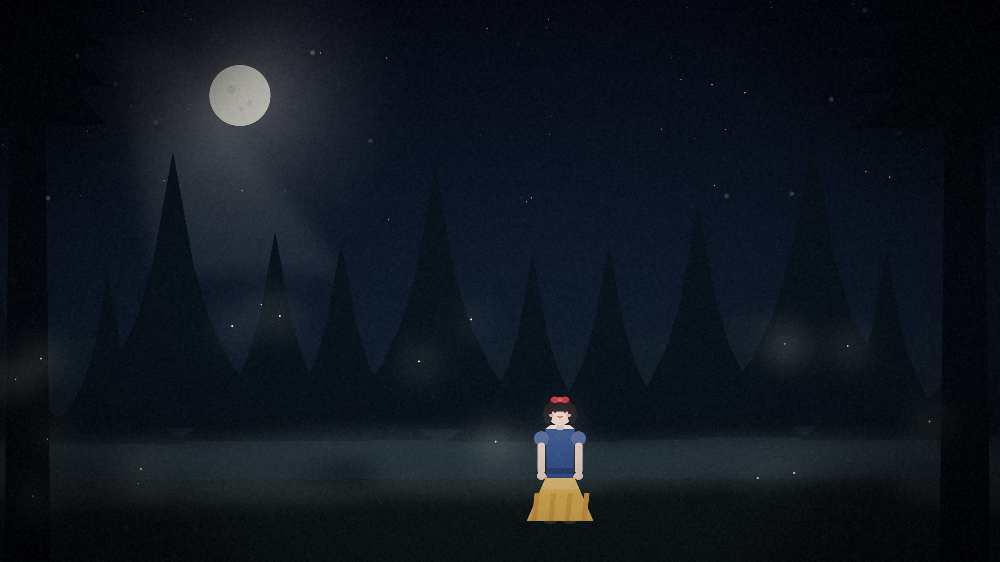
公主逃进了黑漆漆的森林
王后气坏了，派猎人把公主带进森林。可善良的猎人不忍心伤害她，悄悄放走了她。公主一直跑，一直跑，跑进黑漆漆的森林里。
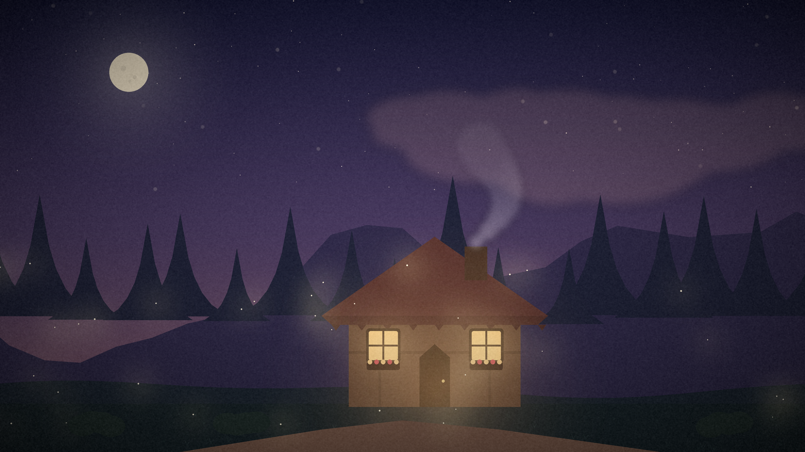
森林深处，有一盏温暖的灯
天快亮的时候，她看见远处有一盏温暖的灯光。那是一间小小的木屋，桌上有七只小盘子、七把小勺子，还有七张小床。
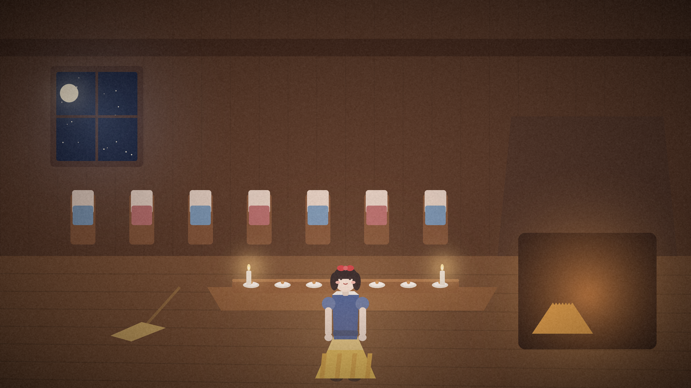
公主把小木屋打扫得干干净净
屋子又脏又乱，公主笑着卷起袖子，把它打扫得干干净净。然后她躺在那张最小的床上，睡着了。
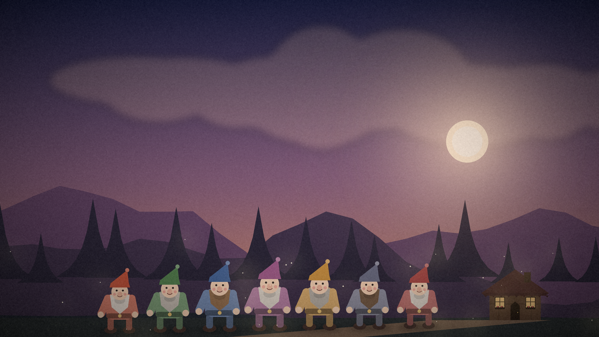
七个小矮人扛着锄头回家啦
傍晚，七个小矮人扛着锄头回家。他们蹦蹦跳跳地唱着歌，忽然发现家里亮着灯、饭菜香喷喷。有人来过！他们踮起脚尖，围到小床边。
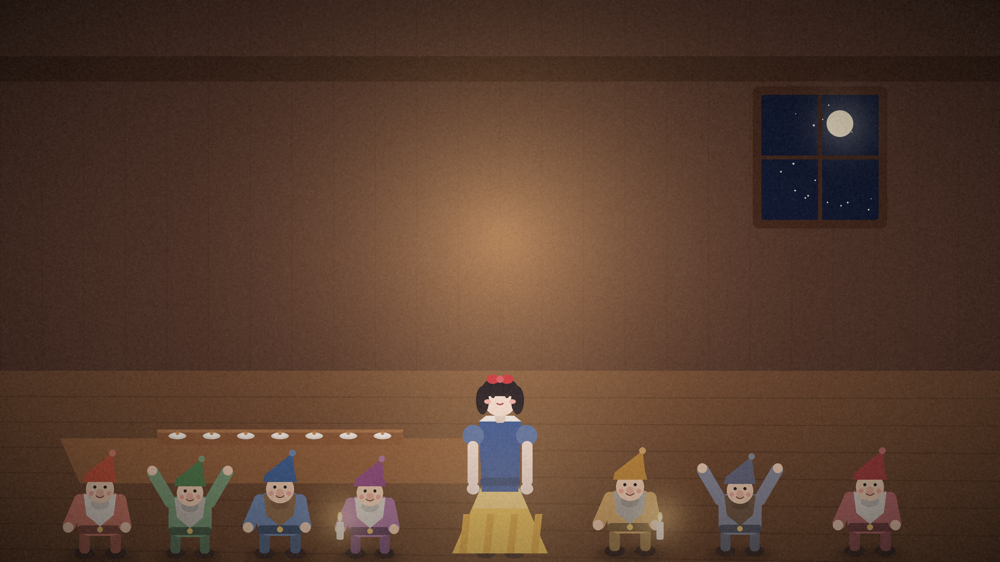
“别给陌生人开门呀”
小矮人们很喜欢这位公主，他们说：留下来吧！白天我们去山里挖宝石，你在家要小心，千万别给陌生人开门。
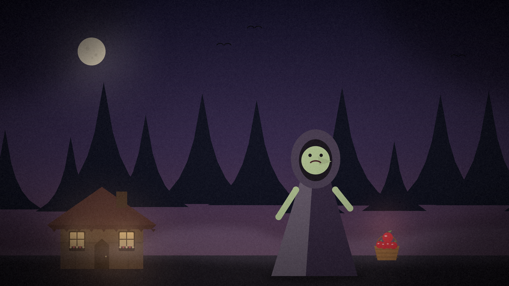
“好心的姑娘，尝一口吧”
可是王后从魔镜那里知道了真相。她变成一个老婆婆，挎着一篮红苹果来到木屋前：好心的姑娘，尝一口吧，这是最甜的苹果。
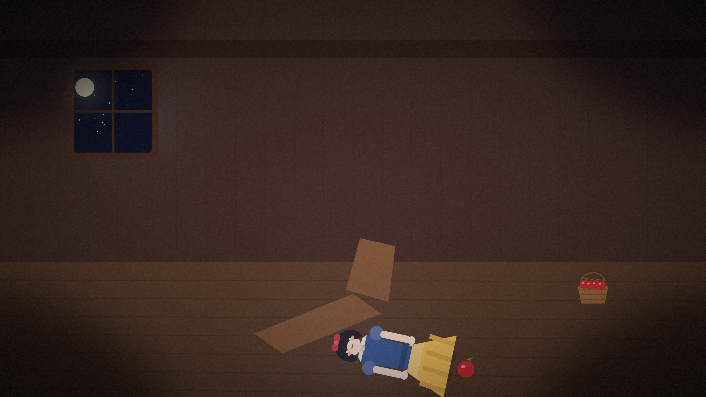
苹果滚落在地，公主倒了下去
公主咬了一口，苹果滚落在地上，她也慢慢地、慢慢地倒了下去，再也没有醒来。
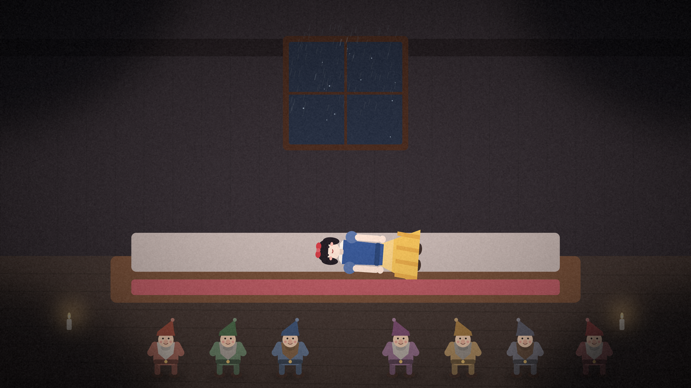
七个小矮人哭了七天七夜
小矮人们回来的时候，公主已经没有了呼吸。他们哭了七天七夜，舍不得把她埋进冰冷的泥土，就做了一口透明的水晶棺。
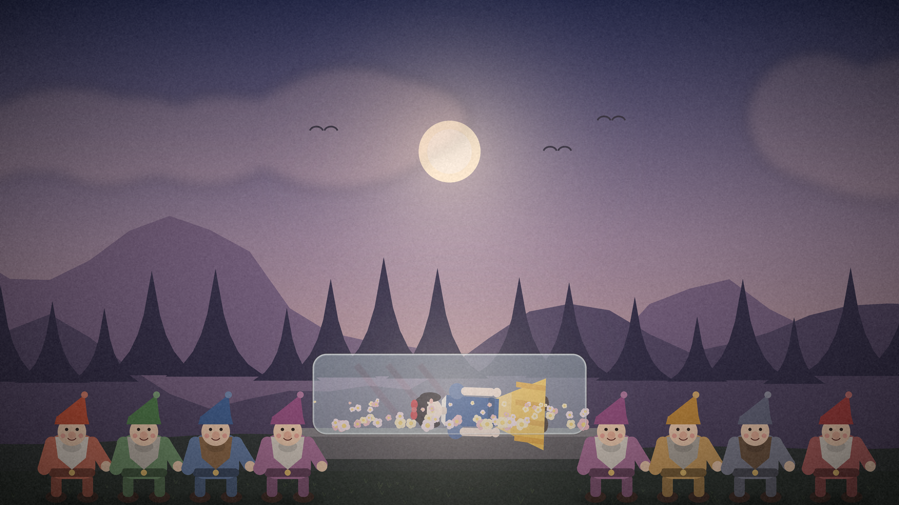
水晶棺里，铺满了鲜花
水晶棺铺满鲜花，被抬到山坡上。风吹过森林，小鸟也安静下来，守着这位沉睡的公主。
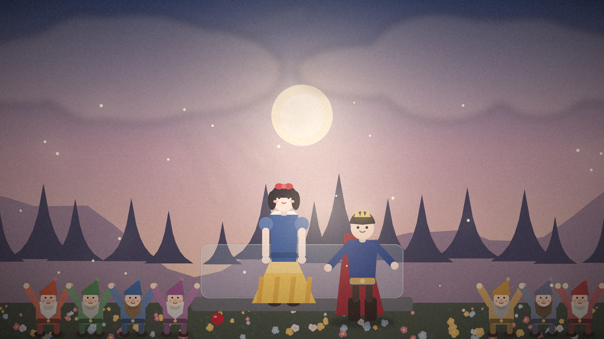
一个吻，唤醒了沉睡的公主
许多年后，一位王子经过森林，忍不住俯身轻轻一吻。卡在公主喉咙里的苹果掉了出来，她睁开眼睛，看见了晨光。
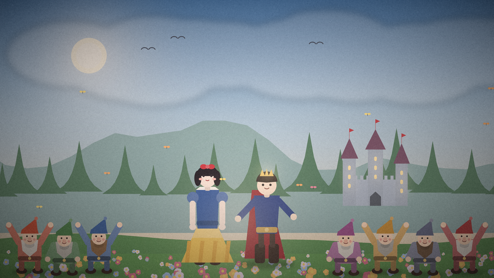
从此，他们幸福地生活在一起
七个小矮人又唱又跳，森林里开满了花。从此，白雪公主和王子幸福地生活在一起，而那七个小矮人，永远是她最好的朋友。
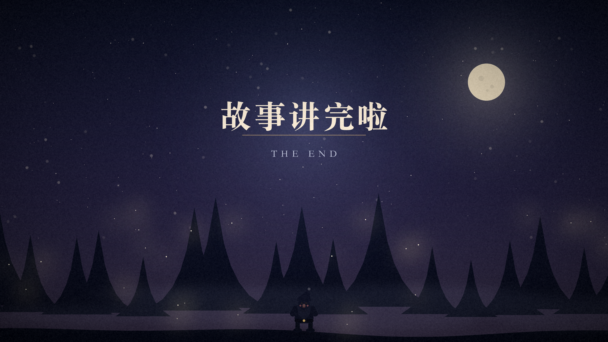
故事讲完啦
（无旁白，仅音乐）